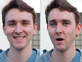
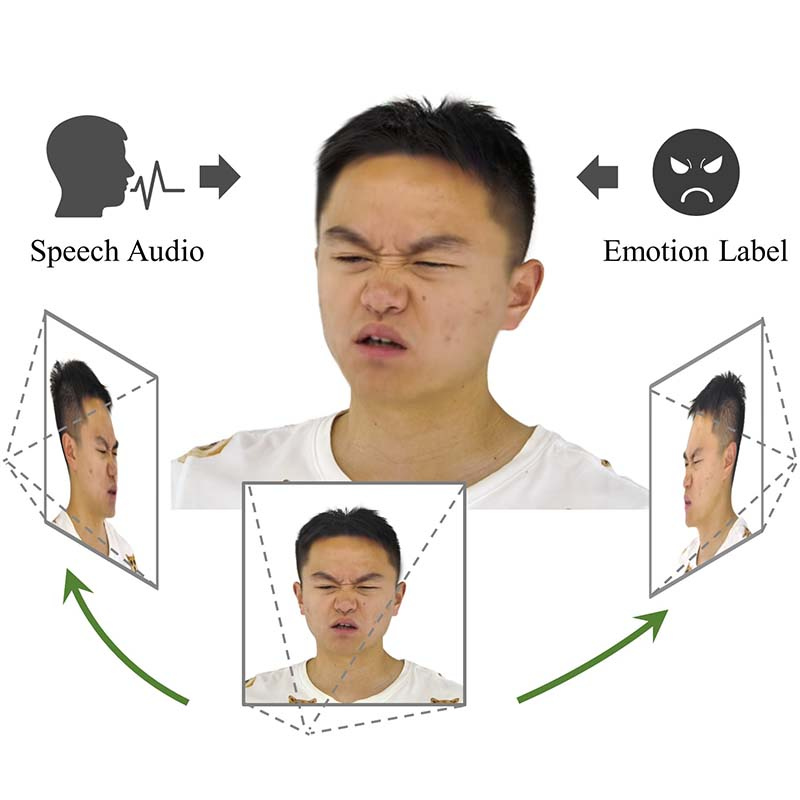
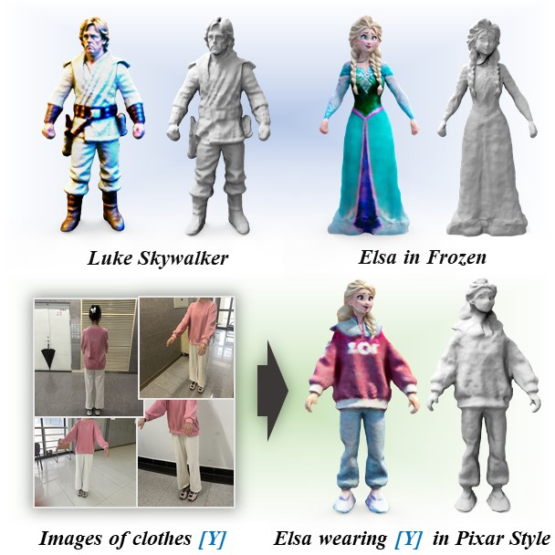

|
Xinya Ji I am a Ph.D. student at Nanjing University supervised by Prof. Xun Cao. I am currently a visiting Ph.D. student at the CGL Lab, ETH Zurich, supervised by Prof. Barbara Solenthaler and Dr. Derek Bradley. I have also worked closely with Prof. Feng Xu at Tsinghua University. I received my Bachelor of Science degree in Electronic Science and Engineering from Nanjing University in 2019. |
{kind=link}
ResearchMy research interests focus on computer graphics, particularly 3D facial reconstruction, animation, and audio-visual learning. |
|

|
Joint Learning of Depth and Appearance for Portrait Image Animation
Xinya Ji, Gaspard Zoss, Prashanth Chandran, Lingchen Yang, Xun Cao, Barbara Solenthaler, Derek Bradley ICCV Workshop on Human-Interactive Generation and Editing (HiGen). 2025. project page / arXiv We propose to jointly learn the visual appearance and depth simultaneously in a diffusion-based portrait image generator. Once trained, our framework can be efficiently adapted to various downstream applications, such as facial depth-to-image and image-to-depth generation, portrait relighting, and audio-driven talking head animation with consistent 3D output. |

|
VividTalk: One-Shot Audio-Driven Talking Head Generation Based on 3D Hybrid Prior
Xusen Sun, Longhao Zhang, Hao Zhu, Peng Zhang, Bang Zhang, Xinya Ji, Kangneng Zhou, Daiheng Gao, Liefeng Bo, Xun Cao 3DV, 2025 project page / arXiv VividTalk can generate realistic and lip-sync talking head videos with expressive facial expression, natural head poses. |
|

|
EmoTalk3D: High-Fidelity Free-View Synthesis of Emotional 3D Talking Head
Qianyun He, Xinya Ji, Yicheng Gong, Yuanxun Lu, Zhengyu Diao, Linjia Huang, Yao Yao, Siyu Zhu, Zhan Ma, Songcen Xu, Xiaofei Wu, Zixiao Zhang, Xun Cao, Hao Zhu ECCV, 2024 project page / arXiv We present a novel approach for synthesizing 3D talking heads with controllable emotion, enhancing lip synchronization and rendering quality. |
|

|
AvatarBooth: High-Quality and Customizable 3D Human Avatar Generation
Yifei Zeng, Yuanxun Lu, Xinya Ji, Yao Yao, Hao Zhu, Xun Cao arXiv:2306.09864. project page / arXiv AvatarBooth is a text-to-3D model. It creates an animatable 3D model with your word description. Also, it can generate customized model with 4~6 photos from your phone or a character design generated from diffusion model. You can play with any magic words to change your final character result with fixed identity. |

|
EAMM: One-shot Emotional Talking Face via Audio-based Emotion-aware Motion Model
Xinya Ji, Hang Zhou, Kaisiyuan Wang, Qianyi Wu, Wayne Wu, Feng Xu, Xun Cao SIGGRAPH Conference Proceedings , 2022 project page / arXiv Given a single portrait image, we can synthesize emotional talking faces, where mouth movements match the input audio and facial emotion dynamics follow the emotion source video. |

|
Audio-Driven Emotional Video Portraits
Xinya Ji, Hang Zhou, Kaisiyuan Wang, Wayne Wu, Chen Change Loy, Xun Cao, Feng Xu CVPR, 2021 project page / arXiv Given an audio clip and a target video, our Emotional Video Portraits (EVP) approach is capable of generating emotion-controllable talking portraits and change the emotion of them smoothly by interpolating at the latent space. |
Academic Service |
|
Design and source code from Jon Barron's website. |